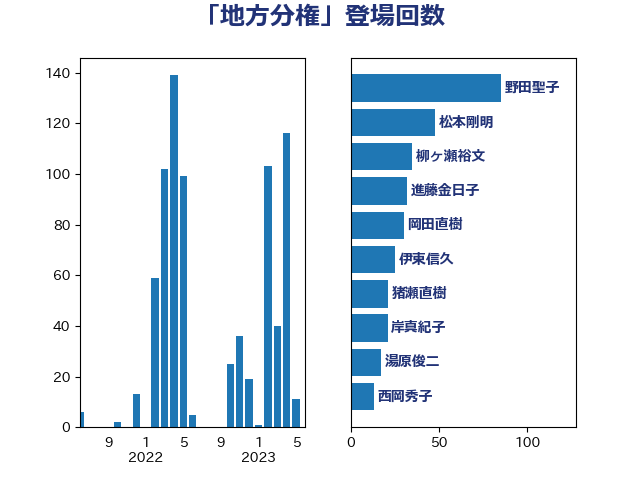

単語「地方分権」

| 野田聖子 | 自由民主党 | 85 回 |
| 松本剛明 | 自由民主党 | 48 回 |
| 柳ヶ瀬裕文 | 日本維新の会 | 35 回 |
| 進藤金日子 | 自由民主党 | 32 回 |
| 岡田直樹 | 自由民主党 | 30 回 |
| 伊東信久 | 日本維新の会 | 25 回 |
| 猪瀬直樹 | 日本維新の会 | 21 回 |
| 岸真紀子 | 立憲民主党 | 21 回 |
| 湯原俊二 | 立憲民主党 | 17 回 |
| 西岡秀子 | 国民民主党 | 13 回 |
| 山本佐知子 | 自由民主党 | 11 回 |
| 加藤勝信 | 自由民主党 | 11 回 |
| 中司宏 | 日本維新の会 | 11 回 |
| 長谷川英晴 | 自由民主党 | 9 回 |
| 野田国義 | 立憲民主党 | 9 回 |
| 小森卓郎 | 自由民主党 | 9 回 |
| 守島正 | 日本維新の会 | 9 回 |
| 阿部司 | 日本維新の会 | 8 回 |
| 浅田均 | 日本維新の会 | 8 回 |
| 市村浩一郎 | 日本維新の会 | 8 回 |
| おおつき紅葉 | 立憲民主党 | 8 回 |
| 音喜多駿 | 日本維新の会 | 7 回 |
| 金子恭之 | 自由民主党 | 7 回 |
| 沢田良 | 日本維新の会 | 7 回 |
| 平木大作 | 公明党 | 7 回 |
| 堀場幸子 | 日本維新の会 | 7 回 |
| 住吉寛紀 | 日本維新の会 | 7 回 |
| 礒崎哲史 | 国民民主党 | 6 回 |
| 田島麻衣子 | 立憲民主党 | 6 回 |
| 岩谷良平 | 日本維新の会 | 6 回 |
| 坂本祐之輔 | 立憲民主党 | 6 回 |
| 岸田文雄 | 自由民主党 | 5 回 |
| 寺田稔 | 自由民主党 | 5 回 |
| 和田義明 | 自由民主党 | 5 回 |
| 道下大樹 | 立憲民主党 | 4 回 |
| 足立康史 | 日本維新の会 | 4 回 |
| 篠原孝 | 立憲民主党 | 4 回 |
| 福田昭夫 | 立憲民主党 | 4 回 |
| 寺田学 | 立憲民主党 | 4 回 |
| 阿部知子 | 立憲民主党 | 3 回 |
| 自見はなこ | 自由民主党 | 3 回 |
| 緒方林太郎 | 無所属 | 3 回 |
| 石田真敏 | 自由民主党 | 3 回 |
| 浮島智子 | 公明党 | 3 回 |
| 末次精一 | 立憲民主党 | 3 回 |
| 末松信介 | 自由民主党 | 3 回 |
| 後藤茂之 | 自由民主党 | 3 回 |
| 尾身朝子 | 自由民主党 | 3 回 |
| 小沢雅仁 | 立憲民主党 | 3 回 |
| 坂本哲志 | 自由民主党 | 3 回 |
| 伊波洋一 | 無所属 | 3 回 |
| 中川正春 | 立憲民主党 | 3 回 |
| 高木真理 | 立憲民主党 | 2 回 |
| 赤池誠章 | 自由民主党 | 2 回 |
| 緑川貴士 | 立憲民主党 | 2 回 |
| 石井苗子 | 日本維新の会 | 2 回 |
| 田村智子 | 日本共産党 | 2 回 |
| 橋本岳 | 自由民主党 | 2 回 |
| 柳本顕 | 自由民主党 | 2 回 |
| 斎藤アレックス | 国民民主党 | 2 回 |
| 打越さく良 | 立憲民主党 | 2 回 |
| 小倉將信 | 自由民主党 | 2 回 |
| 宮路拓馬 | 自由民主党 | 2 回 |
| 奥野総一郎 | 立憲民主党 | 2 回 |
| 吉良州司 | 無所属 | 2 回 |
| 北神圭朗 | 無所属 | 2 回 |
| 倉林明子 | 日本共産党 | 2 回 |
| 伊藤岳 | 日本共産党 | 2 回 |
| 中川貴元 | 自由民主党 | 2 回 |
| 鶴保庸介 | 自由民主党 | 1 回 |
| 高橋千鶴子 | 日本共産党 | 1 回 |
| 高橋光男 | 公明党 | 1 回 |
| 高木啓 | 自由民主党 | 1 回 |
| 高木かおり | 日本維新の会 | 1 回 |
| 長谷川岳 | 自由民主党 | 1 回 |
| 長友慎治 | 国民民主党 | 1 回 |
| 鈴木義弘 | 国民民主党 | 1 回 |
| 金村龍那 | 日本維新の会 | 1 回 |
| 野中厚 | 自由民主党 | 1 回 |
| 輿水恵一 | 公明党 | 1 回 |
| 赤羽一嘉 | 公明党 | 1 回 |
| 赤木正幸 | 日本維新の会 | 1 回 |
| 谷田川元 | 立憲民主党 | 1 回 |
| 西銘恒三郎 | 自由民主党 | 1 回 |
| 西村智奈美 | 立憲民主党 | 1 回 |
| 西村明宏 | 自由民主党 | 1 回 |
| 船田元 | 自由民主党 | 1 回 |
| 臼井正一 | 自由民主党 | 1 回 |
| 紙智子 | 日本共産党 | 1 回 |
| 竹詰仁 | 国民民主党 | 1 回 |
| 神谷裕 | 立憲民主党 | 1 回 |
| 石井章 | 日本維新の会 | 1 回 |
| 石井正弘 | 自由民主党 | 1 回 |
| 田村貴昭 | 日本共産党 | 1 回 |
| 田嶋要 | 立憲民主党 | 1 回 |
| 比嘉奈津美 | 自由民主党 | 1 回 |
| 森屋宏 | 自由民主党 | 1 回 |
| 梅村聡 | 日本維新の会 | 1 回 |
| 梅村みずほ | 日本維新の会 | 1 回 |
| 根本匠 | 自由民主党 | 1 回 |
| 星北斗 | 自由民主党 | 1 回 |
| 斉藤鉄夫 | 公明党 | 1 回 |
| 山田勝彦 | 立憲民主党 | 1 回 |
| 山本剛正 | 日本維新の会 | 1 回 |
| 小野泰輔 | 日本維新の会 | 1 回 |
| 小沼巧 | 立憲民主党 | 1 回 |
| 宮本徹 | 日本共産党 | 1 回 |
| 宮本岳志 | 日本共産党 | 1 回 |
| 宮口治子 | 立憲民主党 | 1 回 |
| 大塚耕平 | 国民民主党 | 1 回 |
| 堀井巌 | 自由民主党 | 1 回 |
| 吉良よし子 | 日本共産党 | 1 回 |
| 古川俊治 | 自由民主党 | 1 回 |
| 井原巧 | 自由民主党 | 1 回 |
| 三木圭恵 | 日本維新の会 | 1 回 |
| 一谷勇一郎 | 日本維新の会 | 1 回 |
| あかま二郎 | 自由民主党 | 1 回 |